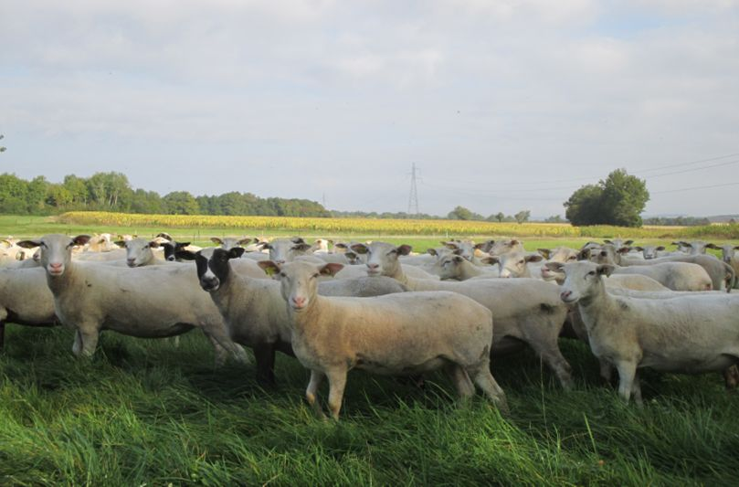

La Romane
Brebis productive et maternelle
Race jeune
Une brebis créée pour la productivité
La Romane (anciennement l'Inra 401) a été créée par l'INRA dans les années 70 au domaine de Bourges afin d'augmenter la productivité du troupeau ovin français. La race ovine est issue de croisements successifs entre animaux ½ sang Romanov et Berrichon du Cher.
- La Romanov est une race extrêmement prolifique, aux grandes qualités d'élevage (précocité sexuelle, saison sexuelle étendue, instinct maternel développé et bonne valeur laitière), mais elle est passablement conformée et a une laine grossière.
- Le Berrichon du Cher, race bouchère par excellence, présente aussi des qualités de précocité, de rusticité et d'aptitude à la marche.

Ses principales qualités
La Romane a acquis les caractéristiques cumulées de ses origines : c'est ce qu'il est convenu d'appeler une très bonne mère.
Une forte productivité
Prolificité moyenne de 200 à 230 % suivant la saison.
Des qualités maternelles
Bonne valeur laitière des mères, comportement maternel très développé (mise bas aisée, adoption facile…). Possibilité de désaisonner naturellement la production : des agneaux à toutes les saisons, sans hormones.
La rusticité
L'implantation de la race n'est pas limitée : on la retrouve dans toutes les régions françaises et tous les types d'élevages (plaine, plateau séchant, montagne, bergerie intégrale, sous-bois, transhumance…).
Une brebis au service de la filière
La production de viande ovine nationale doit et devra sa survie à quelques éléments majeurs :
- Une qualité irréprochable
- La sécurité
- Une production d'agneaux régulière sur l'année
- Un prix accessible au consommateur
La race ovine Romane s'inscrit complètement dans cette démarche. Elle offre aux éleveurs un « support femelle » correspondant aux besoins de la filière : une brebis productive, facile à élever, suffisamment rustique pour s'adapter à tous les types d'élevages et de milieux. Par un croisement terminal avec des béliers qualifiés améliorateurs bouchers, elle permet de produire des agneaux labellisables à toutes périodes de l'année.